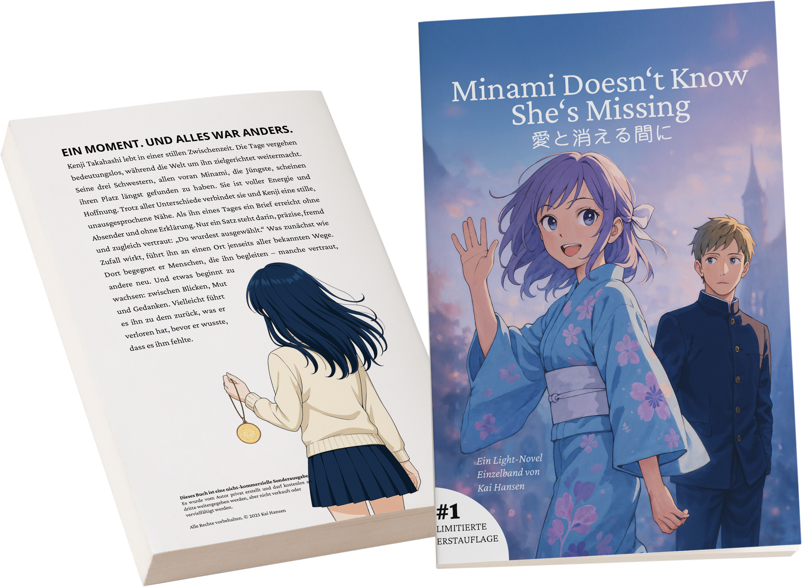

Minami
Doesn't Know
She's Missing
Emotional · Slice of Life · Romance
Emotional · Slice of Life · Romance
412 Seiten.
Eine stille
Welt.
412 pages.
A quiet
world.
Minami Doesn't Know She's Missing ist eine deutsche Light Novel im japanischen Stil – ruhig, emotional und charaktergetrieben. In ruhigem Tempo entfaltet sich eine Erzählung, die Raum lässt für Gedanken, Erinnerungen und Zwischentöne.
Minami Doesn't Know She's Missing is a German light novel in the Japanese style – quiet, emotional, and character-driven. At an unhurried pace, a narrative unfolds that leaves room for thoughts, memories, and the spaces in between.
Im Mittelpunkt steht Kenji Takahashi, der sich in einer stillen Zwischenzeit befindet. Als er einen Brief ohne Absender erhält – „Du wurdest ausgewählt." – beginnt eine Entwicklung, die ihn aus dem Gewohnten herausführt.
At the centre stands Kenji Takahashi, adrift in a quiet in-between time. When he receives a letter with no sender – "You have been chosen." – a development begins that draws him out of the familiar.
Für Leserinnen und Leser, die atmosphärische Geschichten schätzen, in denen leise Momente und emotionale Tiefe im Vordergrund stehen.
For readers who appreciate atmospheric stories where quiet moments and emotional depth take centre stage.

Die
Shirts
The
Shirts
Unisex · Oversized Fit
Beidseitig bedruckt
Unisex · Oversized Fit
Double-sided print


Die
Charaktere
The
Characters
Über
Akademie Yume
About
Akademie Yume
Akademie Yume ist ein kreatives Projekt, das sich dem leisen, emotionalen Erzählen verschrieben hat. Im Mittelpunkt stehen Geschichten, die nicht drängen und keine schnellen Antworten liefern wollen.
Akademie Yume is a creative project dedicated to quiet, emotional storytelling. At its heart are stories that do not rush and offer no easy answers.
Das erste Werk trägt den Titel Minami Doesn't Know She's Missing. Es ist eine Geschichte, die sich bewusst Zeit nimmt – für Stille, für Zwischentöne und für Gefühle, die nicht immer klar benannt werden können.
The first work is titled Minami Doesn't Know She's Missing. It is a story that takes its time deliberately – for silence, for nuance, and for feelings that cannot always be clearly named.
Die Entstehung dauerte rund eineinhalb Jahre. Vieles entstand ohne feste Absicht, manches wurde verworfen, anderes neu gedacht. Erst mit der Zeit formte sich daraus ein geschlossenes Werk, das 2025 fertiggestellt wurde.
The creation took around a year and a half. Much arose without fixed intention, some was discarded, other parts rethought. Only over time did it take shape as a cohesive work, completed in 2025.
Sämtliche Inhalte – vom geschriebenen Wort über Grafiken bis hin zu Cover, Typografie und Layout – entstanden vollständig in Eigenarbeit. Jede Entscheidung ist Teil desselben kreativen Prozesses.
All content – from the written word to graphics, cover, typography, and layout – was created entirely independently. Every decision is part of the same creative process.
Inspiration findet Akademie Yume im japanischen Storytelling. Im Fokus stehen nicht große Wendepunkte, sondern kleine Augenblicke: ein Blick, ein unausgesprochenes Gefühl, eine kurze Pause zwischen zwei Gedanken. Momente, in denen etwas Alltägliches plötzlich eine ganze Welt in sich trägt.
Akademie Yume finds its inspiration in Japanese storytelling. The focus is not on grand turning points, but small moments: a glance, an unspoken feeling, a brief pause between two thoughts. Moments in which something ordinary suddenly carries an entire world within it.